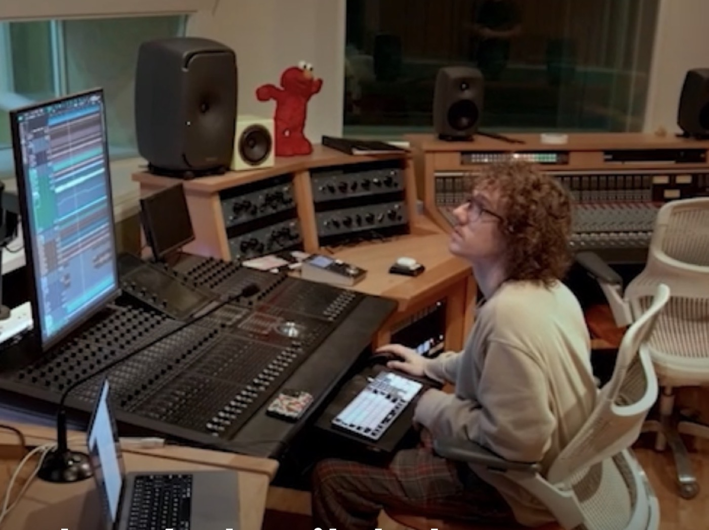

Experience
Specializes in mastering, indie and folk recordings, as well as production.

Selected work
Scroll through a selection of releases Ethan has worked on.
Diya Britto
Violet Beller
Edwin Raphael feat. Diya Britto
Benji Elliot
EP
Skills & tools
Elsewhere
Connect with Ethan’s music and professional work through the links below.